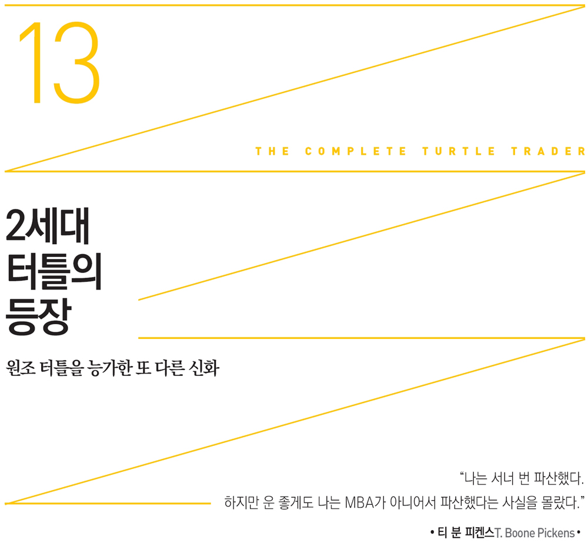
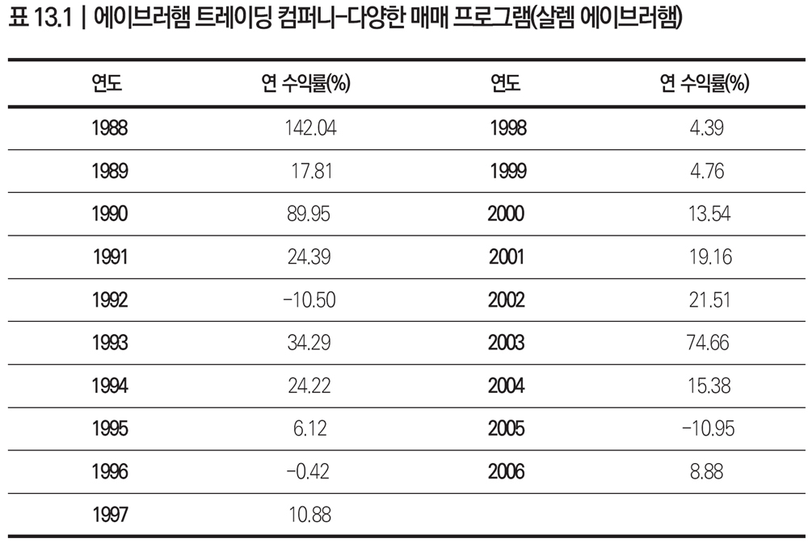

2세대 터틀이 존재했다는 사실이 터틀 스토리 가운데 가장 중요한 부분이라 해도 과언이 아니다. 궁극적으로 이들은 트레이딩 능력은 타고난 것이 아니라 얼마든지 가르칠 수 있음을 뒷받침하는 논거를 성공한 1세대 터틀보다 훨씬 더 설득력 있게 제시했다. 더욱이 누구든 터틀이 될 수 있다는 사실을 입증했다.
2세대 터틀에는 마크 월시, 조너선 크레이븐, 1989년 윌리엄 에크하르트가 원래부터 가르친 존 포넨고John. D. Fornengo, 그리고 살렘 에이브러햄 등이 있다. 이들 넷 모두 터틀 스타일의 추세추종 전략을 간접적으로 배운 수백 명의 추세추종 트레이더 무리에 속한다. 이들은 여러 면에서 원조 터틀을 훨씬 능가하는 트레이딩 사업을 육성했다.
마크 월시가 강세장과 약세장에 어떻게 대응하는지 예를 들면서 자신의 운용 스타일을 설명할 때에는 마치 리처드 데니스와 윌리엄 에크하르트를 보는 듯했다. “대두 선물이 10센트 오르고 옥수수 선물이 5센트 내리면 저희는 대두를 삽니다. 옥수수가 대두처럼 곧 상승하리라 기대하고 옥수수를 사려는 사람들이 있습니다. 하지만 우리는 이와 반대로 매매합니다. 가장 강한 상품은 사고 가장 약한 상품은 팝니다.”
다른 2세대 터틀 둘은 리치몬드 그룹 펀드Richmond Group Fund를 운용하는 로버트 마셀러스Robert Marcellus와 스콧 헨리Scot Henry다. 스콧 헨리는 제리 파커와 키더 피바디(제임스 리버 캐피탈)를 위해 일한 적이 있다는 사실 이외에는 알려진 것이 거의 없다. 우연히도 이들도 버지니아 주 마나킨-사보의 제리 파커 사무실 가까이에 근거지를 두고 있다.
트레이딩 비즈니스의 성공 여부를 판단하는 잣대에는 여러 가지가 있겠지만 출발점은 ‘수익률’이다. 사람들은 팀워크나 균형감각도 중요하다고 말하지만 여전히 큰돈을 버는 개인적 능력을 성공의 기준으로 삼는다. 진정한 경쟁력을 지난 사람들은 실패에도 결코 흔들리지 않는다. 설령 실패하더라도 쉽게 그만두지 않는다. 이들은 목표에 매진하고 어떤 장애물이라도 굴하지 않고 넘어서려고 노력한다. 더욱이 어떤 상황에서도 희망의 끈을 놓지 않는다. 승리자들은 쟁취할 수 있다는 강한 확신이 있기 때문에 우승을 향해 앞으로 나아간다. 공이 날아올 때마다 삼진을 두려워하지 않고 방망이를 휘두르는 것이다.
많은 원조 터틀은 그렇지 않았다. 리처드 데니스는 원조 터틀들에게 성공 요인의 일부분만 가르쳤다. 그는 자신을 시카고 사우스사이드에서 ‘거래소의 왕자’로 이끌어 준 내적 욕구까지 터틀 수련생들에게 가르칠 방법은 없었다. 리처드 데니스는 많은 2세대 터틀과 마찬가지로 필요에 의해 고학으로 운용법을 터득할 수밖에 없었다.
모든 2세대 터틀 가운데 두드러진 한 사람은 바로 살렘 에이브러햄이다. 그는 트레이딩을 시작할 때 리처드 데니스나 윌리엄 에크하르트처럼 투자 경력이 있지도 않았고 경험을 나눌 엇비슷한 터틀 수련생 그룹도 없었다. 골드만 삭스나 헤지펀드에서 근무한 적도 없었다. 하지만 전혀 걸림돌이 되지 않았다.
에이브러햄은 두꺼운 갈색 머리에 체격도 탄탄한데다 성격도 낙천적이어서 실제 나이인 마흔 살보다 젊어 보였다. 그는 목장 일꾼으로 오해받을 수도 있는 인상이지만 그의 느릿느릿한 텍사스 말투와 친절한 태도 이면에는 몇 세대를 이어온 강한 기업가적 기질이 숨어있었다.
살렘 에이브러햄은 월가의 혈통과 얼마나 멀리 떨어져있을까? 그는 1913년 텍사스 캐너디언 지방에 정착한 기독교계 레바논 이주민 출신이다. 그의 할아버지 맬러프 우피 에이브러햄Malouf ‘Oofie’ Abraham은 가게를 열기 전에 기찻길 옆에서 기성복을 팔아 생계를 꾸렸다.
살렘 에이브러햄은 트레이더로 방향을 틀기 전 노틀담대학에 다닐 당시에는 어릴 적 친구인 루스 앤Ruth Ann과 결혼한 뒤 통신판매 사업을 꾸릴 생각을 하고 있었다. 그는 루스 앤과 결혼을 하고 여전히 텍사스 캐너디언에 살고 있지만 사람들의 이목을 끈 것은 그의 통신판매 경력이 아니었다. 그것은 바로 20년간의 운용 실적이었다.

출처: 미 상품선물거래위원회에 제출한 자료
내가 살렘 에이브러햄을 처음 인터뷰한 것은 2005년 그의 사무실에서였다. 그의 세상은 내게 문화 충격으로 다가왔다. 텍사스 캐너디언은 미국의 대표적인 시골 마을이었지만 예상과는 다른 모습이었다. 크게 성공을 거둔 에이브러햄이 이 작은 동네보다 몇 배나 큰 마을에도 없을 것 같은, 흔치 않은 편의시설들을 지어주었던 것이다.
신호등이 하나밖에 없는 캐너디언 중심가에 이제는 캐틀 익스체인지Cattle Exchange 스테이크하우스가 들어섰고 디지털 사운드 시스템이 있는 극장도 다시 생겼다. 살렘 에이브러햄이 수백만 달러를 들여 이러한 오아시스를 만들었던 것이다. 그가 이를 어떻게 이뤄낼 수 있었을까?
터틀을 만나다
살렘 에이브러햄이 제리 파커를 만날 기회가 없었다면 결코 트레이딩의 길로 들어서지 않았을 것이다. 1987년 봄 그는 노틀담대학에서 졸업까지 한 학기를 남겨두고 있었다. 당시 그는 통신판매 사업을 시작하기 위해 3년 반 만에 대학을 마칠 작정이었다. 그러던 어느 날 친척 결혼식에 참석해 제리 파커를 만났고 삶이 바뀌었다.
그곳에서 살렘 에이브러햄은 인생이 바뀌는 순간이 다가오는 줄도 모른 채 제리 파커와 일상적인 대화를 하고 있었다(제리 파커의 아내와 살렘 에이브러햄은 서로 사촌관계였다). 그는 제리 파커에게 무슨 일을 하느냐고 묻자 이런 답변이 돌아왔다. “우리는 특정 패턴이 나오는지 살피고 확률을 계산하면서 위험을 관리합니다. 그러다 이 패턴이 나오면 매매를 실행하죠.” 살렘 에이브러햄은 믿지 못하겠다는 듯 되물었다. “확률이 유리하게 나오나요? 정말 그런가요?”
살렘 에이브러햄은 터틀 스토리를 처음 들었을 때 어안이 벙벙했다. 그는 당시 상황을 이렇게 설명했다. “제리 파커는 리처드 데니스 및 그가 모집해 훈련시킨 터틀에 대해 얘기해줬습니다. 이들 모두 수익을 올리고 있다는 것과 매년 얼마나 버는지도 알려줬죠.” “텍사스의 작은 마을에서 생계를 꾸리기로” 마음먹었던 살렘 에이브러햄은 속으로 외쳤다. “바로 이곳 캐너디언 시골동네에서도 할 수 있는 일이군.”
그 순간 그는 수십 년 전 미국에서 한창 철도가 건설 중일 때 할아버지가 그랬듯 자신도 이 기회를 꼭 잡아야 한다고 판단했다. 그는 터틀과 리처드 데니스에 대해 들어본 적도 없고 트레이딩에 대해서도 잘 몰랐지만 제리 파커의 경력을 살펴본 뒤 트레이딩을 직업으로 삼기로 바로 마음을 바꾸었다. 즉, 통신판매 사업을 접기로 했다.
운 좋게도 그는 제리 파커로부터 리치몬드에 방문하고 싶으면 언제든 오라는 제의를 받았다. 바른 결정을 내릴 수 있도록 이것저것 보여주겠다는 것이었다. 다음 주에 살렘 에이브러햄은 제리 파커를 찾아갔다. 사실 그는 제리 파커가 방문하라는 제의를 했을 때 형식상 건넨 말이라고는 생각하지 않았다. 그러나 제리 파커는 그가 실제 찾아오리라고는 조금도 기대하지 않았다.
제리 파커 사무실 방문이 부담을 주는 일이라는 생각을 전혀 하지 않았던 그는 당시의 생각을 이렇게 회상했다. “제리 파커는 과묵한 젊은 친구여서 ‘그가 제의를 했을 때 그게 진심’이라고 생각했습니다.” 살렘 에이브러햄이 전화했을 때 제리 파커는 “아, 그게…….”라며 연신 머뭇거렸다. 그때서야 그는 제리 파커가 친척에게 형식상 던진 말이었음을 알아차렸다. 하지만 결국 제리 파커는 승낙했다. “물론이죠. 오세요.”
살렘 에이브러햄은 제리 파커가 리치몬드에 거주하고 있다는 점에 착안해 자신도 조그마한 캐너디언에 살면서 트레이딩을 할 수 있지 않을까 생각했다. 그렇게만 된다면 전화선만 있으면 장차 제리 파커처럼 될 수 있을 것이다. 통신판매업을 하려던 계획을 바로 트레이딩 쪽으로 바꾼 자신감은 그가 실천하는 기업가 정신을 지녔다는 첫 번째 신호였다. 더욱이 그는 아주 운 좋게도 말도 안 되는 아이디어에서 기회를 잡은 자수성가한 집안 출신이었다.
그렇다고 살렘 에이브러햄도 기업가 정신이 타고났다는 뜻은 아니다. 아주 제한된 자본을 현명하게 쓰는 일은 그의 몫이었다. 그리 놀라운 일은 아니겠지만 그는 제리 파커 사무실을 처음 방문했을 때 ‘위험관리’가 아주 중요하다는 점을 배웠다. 살렘 에이브러햄은 이렇게 회상했다. “제리 파커에게는 분명 제게 알려줄 수 없는 고유의 기법들이 있었습니다.” 하지만 그는 살렘 에이브러햄에게 “추세추종 전략은 잘 들어맞습니다. 하지만 생각해야 할 요소들이 있어요.”라면서 위험관리 개념을 설명해주었다. 그는 제리 파커의 너그러움을 고마워했다. “초기에 그가 도와주지 않았다면 저는 분명 이 자리에 오르지 못했을 겁니다. 결코 지금의 저는 없었을 것입니다.”
당시 살렘 에이브러햄은 트레이딩에 문외한이었다. 그는 이 분야에 경험이 없었지만 제리 파커 사무실을 방문한 뒤 연구를 시작했다. 노틀담대학에 가서 리처드 데니스와 추세추종 트레이더에 대한 자료를 샅샅이 찾아 읽었다. 다음은 그가 한 말이다. “어떤 분야에서 성공하고 싶으면 누가 성공했는지 그리고 이들이 무슨 일을 했는지 보면 됩니다.”
그는 노틀담대학에서 마지막 학기를 보내면서 리처드 데니스의 성공 스토리를 적극 홍보했지만 귀담아 들어주는 사람이 없었다. 교수들도 도무지 관심을 보이지 않았다. 그들은 리처드 데니스가 “운이 좋았을” 뿐이라고 치부했다. 교수들이 이렇게 회의적으로 반응한 데에는 그럴만한 이유가 있었다. 살렘 에이브러햄이 설교하고 다닌 내용은 금융계에서 널리 인정된 효율적 시장 가설과 정면으로 배치되었기 때문이다.
제리 파커를 만난 뒤 방향을 바꿔 성공한 사람은 살렘 에이브러햄만이 아니었다. 이 책에서 이름을 밝힐 수는 없지만 다른 트레이더도 너그러운 제리 파커의 조언을 받았다고 털어놓았다. 몇 년 전 그는 제리 파커의 도움 덕에 트레이딩 회사를 차릴 수 있었다. 그가 운용하는 자산은 1억 달러에 이른다.
트레이딩의 세계로 뛰어들다
살렘 에이브러햄은 초기에 제리 파커의 도움을 받은 뒤 추세추종 기법을 직접 연구하기 시작했다. 하지만 결코 쉽지 않았다. 위험관리 규칙을 적고 날마다 계산해 차트에 표시했다. “이곳에서 매수하면 저곳에서 청산하고, 여기서 사면 저기서 판다.”
그는 스물한 개 시장을 대상으로 8개월간 테스트한 뒤 할아버지를 찾아갔다. “할아버지, 100만 달러를 투자하면 8개월 뒤 160만 달러로 불릴 수 있어요.” 그는 자신이 작업한 내용을 보여주며 흥분을 감추지 못했다. 텍사스에 있었던 수많은 거래를 보아온 당시 일흔두 살의 할아버지는 손자의 새로운 도전을 탐탁하게 여기지 않았다.
할아버지의 회의적 태도는 넘어서기 어려웠다. 그리고 기를 죽이는 빈정거림 앞에서 마음을 더욱 단단히 먹어야 했다. 할아버지가 다음과 같이 비아냥댔다. “도대체 뭘 하겠다는 거냐? 이 모든 것을 싸서 시카고로 보내면 그들이 수표라도 보내줄 것 같으냐? 이 멍청한 녀석아, 네가 노틀담대학을 나왔다고 똑똑한 줄 아는 모양인데 시카고에 있는 선수들은 너를 물어뜯어버릴 거야. 돈을 잃는 방법이 널려있는데 왜 하필 가장 빨리 돈을 날리는 길을 택하겠다는 게냐?”
살렘 에이브러햄은 이에 굴하지 않고 트레이딩 철학 뒤에 숨은 분별 있는 전략을 설명했다. 위험관리를 철저히 하겠다는 내용이었다. “람보르기니를 몬다고 꼭 시속 260킬로미터로 달릴 필요는 없잖아요. 저는 시속 50킬로미터가 넘지 않도록 위험을 관리할 겁니다.”
살렘 에이브러햄은 자신감과 기업가적 열정을 물려받았음에 틀림없었다. 냉엄한 비즈니스 세계에 대한 이해 이상의 것들도 대물림했다. 살렘 에이브러햄은 상도의를 지켜야 한다는 점도 배웠다. 할아버지는 남을 등치면 그것으로 끝이고 사업을 접어야 한다고 늘 강조했다. 그는 손자들에게 무슨 일이 있어도 약속을 지키는 것이 가장 중요하다고 가르쳤다. 더욱이 “작은 일이라도 확실하게 하라”고 말하면서 공정함을 넘어서기를 바랐다. 이들과 오랜 친분을 쌓아온 전설적 투자자 티 분 피켄스는 살렘 에이브러햄이 추진력도 물려받았다고 생각했다. 그는 이 가족과 반세기 동안 알고 지내면서 이들이 텍사스 팬핸들 지역에 엄청나게 공헌하는 모습도 지켜보았다.
살렘 에이브러햄은 운 좋게도 기업가적 모험을 주저하지 않는 환경에서 자랐고 실제 가족의 사업상 거래에 참여하기도 했다. 실패로 끝나기는 했지만 실제 거래에 참여해 큰 교훈도 얻었다. 할아버지로 부터 얻어들은 오일가스 거래를 성사시키기 위해 셸 오일Shell Oil 대표를 직접 찾아가기로 마음먹었다. 이 회사가 유전의 일부를 팔수도 있다고 생각했기 때문이다.
불가능하다고 여긴 할아버지는 이렇게 말했다. “그들은 30~40년간 이 사업을 해왔단다. 그동안 우리도 계속 접촉해봤지만 그들은 누구에게도 팔려하지 않아.” 살렘 에이브러햄은 포기하지 않았다. “셸오일 대표가 새로 부임했어요. 그러니 이번에는 움직일 수도 있어요.”
할아버지도 고집을 꺾지 않았다. “만약 거래를 성사시키면 시내 한가운데 교차로에 가서 네 엉덩이에 뽀뽀해주마.” 살렘 에이브러햄도 지지 않았다. “뽀뽀할 준비나 하세요, 할아버지. 제가 꼭 성공시킬 테니까요.” 물론 거래는 이루어지지 않았다.
하지만 살렘 에이브러햄이 노틀담대학에서 마지막 학기를 다니면서 트레이딩 일을 병행할 수 있었던 것도 이 같은 두려워하지 않는 기업가 정신 덕분이었다. 사실 공부와 일을 동시에 하기란 정말 힘들었다. 스물한 개 시장에서 거래하면서 쉽지 않은 21학점도 따야 했기 때문이다. 시간을 쪼개야 했기 때문에 수업시간은 모두 오후로 잡았다. 아침 일곱 시에 일어나 열 시까지 트레이딩한 뒤 스톱주문을 걸어놓고 수업을 들으러 갔다. 수업이 끝난 뒤에는 스톱주문이 체결되었는지 점검했다.
1987년 가을은 역사에 남을 만한 커다란 변동성을 처음 겪은 신참 트레이더에게는 특히 어려운 시기였다. 9월 말에서 10월 초 사이 금리가 폭락하기 시작했다. 그는 단기 가을방학 중이던 1987년 10월 19일 집에 돌아왔다. 그는 당시 일을 회상했다. “방학 시작 전 금요일까지 꽤 많은 돈을 벌었습니다. 5만 달러가 6만 6,000달러로 불었으니까요. 집으로 돌아오면서 정말 흐뭇한 기분이 들었어요.” 그러더니 다음 월요일에는 시장이 완전히 망가져버렸다.
이는 정말로 큰 사건이어서 온통 난리법석이었다. 살렘 에이브러햄은 유로달러 포지션이 마음에 걸렸다. 그래서 브로커에게 전화해 물었다. “현재 유로달러는 어떤가요?” 브로커가 답했다. “250 올랐습니다.” 그가 되물었다. “250이라고요? 25가 아닌가요?” 브로커가 다시 말했다. “아닙니다. 250이 맞습니다.” 그는 자기가 걱정한 수준 이상인지를 알고 싶었다. 알고 보니 유로달러가 평소 거래되던 평균 범위에서 10 표준편차 정도 벗어나 움직이고 있었다.
6만 6,000달러가 3만 3,000달러로 쪼그라들었다. 그렇지만 살렘 에이브러햄은 이 사건으로 큰 교훈을 얻었다. 끝까지 살아남아 다음 날 거래할 수 있도록 하는 것이 중요하다는 사실을 깨달았다. 그 시점에 자금을 몽땅 날리지 않고 생존하는 것이 ‘우선’이었다. 그는 당시를 떠올리며 말했다. “한 가지 확실히 배운 점은, 결코 발생하지 않는다고 여겨지는 사건들이 언제든 일어날 수 있음을 명심해야 한다는 것이었습니다.”
살렘 에이브러햄은 1987년 10월 시장 폭락 후 잠시 매매를 중단했다. 몇 주간 쉰 뒤 복귀해 11월과 12월 초반 즈음까지 매매한 후 한 해를 마감했다. 3만 3,000달러까지 줄었던 자금이 4만 5,000달러까지 늘었다. 그는 계좌에서 1,600달러를 인출해 지금의 아내가 된 여자친구에게 약혼반지를 사주기 위해 보석가게를 찾았다.
커머더티스 코퍼레이션
1988년에 접어들자 살렘 에이브러햄은 트레이딩에만 전념하고 싶었지만 여전히 할아버지에게 자신을 증명해 보여야 했다. 그는 할아버지에게 말했다. “이 일을 부업으로 하고 싶어요. 그리 바쁘지 않으니 트레이딩 부업을 허락해 주시겠어요?” 당시 그는 4만 5,000달러를 가지고 있었는데, 형 에디 에이브러햄Eddie Abraham이 1만 5,000달러를 보태기로 했다. 동생 제이슨 에이브러햄Jason Abraham도 1만 달러를 출자해 ‘에이브러햄 브라더 펀드’는 7만 달러가 되었다. 그는 할아버지에게서도 3만 달러를 받아 총 10만 달러로 시작하고 싶었다.
할아버지는 기꺼이 협조할 의사가 있었지만 가풍에 맞게 조건을 내걸었다. “좋다만 조건이 있다. 내가 3만 달러를 내겠다. 하지만 10만 달러가 5만 달러로 줄어들면 저 모니터를 창밖으로 내던지고 이 말도 안 되는 트레이딩은 끝내는 거다.”
당시 20대 초반의 청년인 살렘 에이브러햄은 커다란 위험과 압박에 직면했다. 종종 있는 일이지만 10만 달러로 새 회사를 출범시키자마자 기반이 흔들렸다.
1988년 5월 첫 두 주 동안은 정말 끔찍했다. 어느 날 아침 할아버지가 아래층 사무실로 내려와 머리를 툭 치며 물었다. “얼마나 남았냐?” 살렘 에이브러햄이 대답했다. “6만 8,000달러요.” 이에 할아버지는 비꼬듯 말하며 나갔다. “파산은 시간 문제군.”
하지만 파산하는 일은 끝내 일어나지 않았다. 1988년 가뭄으로 곡물 가격이 폭등할 때 그는 대두, 옥수수, 밀 매수 포지션을 들고 있었다. 5월 중순 이후 나타난 곡물 시장 급등 추세는 6월까지 이어졌다. 포지션을 제대로 구축한 그는 엄청난 이익을 챙길 수 있었다.
살렘 에이브러햄은 트레이딩을 시작한 첫 8개월 동안 엄청난 변동이 있은 뒤 곧 커다란 추세가 나타나리라 어떻게 확신할 수 있었을까? 대부분의 사람들은 실패했다고 선언하고 그만두었을 것이다. 부침은 있었지만 수익을 내는 모습을 할아버지에게 보여주자 형도 이사로 참여해 적극 지원해주었다. 어느 날 할아버지가 “딘 위터Dean Witter 원금보장펀드 2호” 안내장을 들고 와 책상에 던지며 말했다. “이봐, 이 친구들보다 더 잘했더구나.”
커머더티스 코퍼레이션은 딘 위터 펀드의 운용회사였는데 이들은 1억 달러를 모집해 8~10명의 트레이더에게 배분할 계획이었다. 커머더티스 코퍼레이션은 유서 깊은 회사였다. 뉴저지 프린스턴에 기반을 둔 회사로서 인큐베이터로 명성을 날리고 있었다(이 기업은 1990년대 후반의 인수합병으로 골드만 삭스의 사업 부문으로 편입되었다). 이 회사는 주로 역량 있는 헤지펀드에 초기 자금을 대주거나 훈련시키는 일을 했다. 폴 튜더 존스Paul Tudor Jones, 루이스 베이컨Louis Bacon, 에드 세이코타Ed Seykota, 브루스 코브너Bruce Kovner, 마이클 마커스Michael Marcus 같은 저명한 트레이더도 이 회사를 통해 자금을 지원받았다.
당시 살렘 에이브러햄은 커머더티스 코퍼레이션의 훌륭한 역사를 모른 채 전화기를 들어 연락했다. 늦은 오후 일레인 크로커Elaine Crocker가 전화를 받았다. 루이스 베이컨의 무어 캐피탈을 이끌고 있는, 헤지펀드 업계에서 가장 영향력 있는 여성으로 인정받는 일레인 크로커는 관련 정보를 보내주겠다고 했다. 살렘 에이브러햄은 일레인 크로커가 자기 회사를 후보 운용사로 진지하게 고려하고 있는지 의문이었다. 운용 기간이 1년밖에 안 되었기 때문이다.
하지만 결국 커머더티스 코퍼레이션으로부터 다시 연락이 왔다. 곧 휴스턴으로 갈 계획이니 그곳으로 오라는 메시지였다. 그는 좋은 기회다 싶어 휴스턴 공항으로 날아가 일레인 크로커와 마이클 가핑클Michael Garfinkel을 만났다.
회의 전 살렘 에이브러햄은 스물세 번째 생일을 자축했다. 상대편에서는 마이클 가핑클이 주로 얘기했다. 일레인 크로커는 가만히 앉아 논의 모습을 지켜보았다. 마이클 가핑클이 말했다. “와, 지난 달은 어려웠군요. 무슨 일이 있었죠?” 살렘 에이브러햄은 이번 달은 수익률이 40퍼센트라고 강조했다.
일레인 크로커가 웃기 시작했다. 비웃는다고 여긴 살렘 에이브러햄이 물었다. “40퍼센트 수익률이 우습나요?” 어색한 분위기를 읽은 마이클 가핑클이 살렘 에이브러햄에게 목표 수익률이 얼마인지 알고 싶다고 했다. 살렘 에이브러햄은 연 100퍼센트를 추구한다고 터틀처럼 대답했다. 리처드 데니스를 떠난 많은 원조 터틀이 들었던 것처럼, 그도 ‘대박을 노리는’ 위험한 전략에서 한 발 물러서기를 바란다는 말을 일레인 크로커로부터 들었다. 그녀와 마이클 가핑클은 제리 파커와 다른 사람들이 들었던 똑같은 말을 했던 것이다. “연 30퍼센트 수익률만 올려도 사람들이 돈을 싸들고 몰려올 겁니다. 그러니 레버리지를 줄일 필요가 있습니다.”
커머더티스 코퍼레이션은 살렘 에이브러햄 트레이딩 시스템의 10년 시뮬레이션 자료도 보고자 했다(이 자료는 아직 없었다). 그래서 그는 재빨리 트레이딩 시스템을 테스트하기 위해 프로그래밍을 배워야 했다. 압박감이 이만저만이 아니었다. 그래서 그는 전혀 새로운 연구를 하고 프로그래밍 기술을 습득하기 시작했다. 이는 바로 원조 터틀과 차별화되는 여러 요소 중 하나였다.
짚고 넘어가야 할 일이 한 가지 더 있었다. 커머더티스 코퍼레이션은 살렘 에이브러햄에게 최소 금액만 맡기고 싶었다. 최소 금액을 따로 정해 놓지 않은 살렘 에이브러햄은 나중에 분명 합리적인 수준으로 올라가리라 보고 20만 달러로 제시했다. 그의 판단이 맞아 이들은 그의 가장 큰 첫 고객이 되었다.
오랜 트레이딩 경험도 헤지펀드 경력도 없는 젊은이에게 이 투자는 메이저리그 합격 통지서나 마찬가지였다. 다음에 커머더티스 코퍼레이션은 700~800만 달러를 또 투자했다. 할아버지가 투자한 3만 달러는 얼마가 되었을까? 그 돈은 자그마치 130만 달러로 불어났다.
하지만 살렘 에이브러햄이 큰돈을 벌어 성공했는데도 여전히 나이도 어리고 경력도 짧아, 젊은 시절 성공한 리처드 데니스가 그랬듯 그를 의심하는 큰 회사들 때문에 곤란을 겪었다. 리처드 데니스가 은행에서 25만 달러 수표를 찾는데 애를 먹었던 것처럼, 스물다섯인 살렘 에이브러햄도 차를 빌리기가 어려웠다. 운 나쁘게도 자동차 렌탈 회사가 최근에 최저 나이 기준을 올렸기 때문이다. 그는 1,500만 달러나 운용하고 있었지만 허츠Hertz 렌터카 직원은 그에게 차를 빌려주려 하지 않았다. 여러 차례 시도한 후 태도를 바꿔 말했다. “내게 1,500만 달러를 맡긴 사람들이 있고, 내가 이 1,500만 달러로 원하는 것은 무엇이든 사고팔수 있다는 사실도 모르나요? 그런데도 내게 차를 빌려주지 않겠다는 겁니까? 고작 1만 5,000달러, 2만 달러짜리 차를 하루만 빌리겠다는데도 싫다고요?” 카운터에 있던 여직원이 그를 위아래로 훑어보며 말했다. “그래, 못 믿겠다. 이 풋내기야.” 살렘 에이브러햄이 응수했다. “중고차 렌터카 회사에나 전화해야겠군.”
리처드 데니스와 윌리엄 에크하르트로부터 배우다
터틀에 대해 아는 사람들조차도 터틀 전설의 기반을 이룬 1983년과 1984년의 원조 수업 뒤에 있었던 잘 알려지지 않은 세 번째 훈련에 대해서는 잘 모른다. 실제 살렘 에이브러햄은 자신의 운용회사를 세운 뒤 후 몇 해 지나서 리처드 데니스와 윌리엄 에크하르트로부터 개인 지도를 받았다. 1990년대 초 커머더티스 코퍼레이션은 자사가 자금 운용을 맡긴 트레이더들을 위해 트레이딩 수업을 열어달라고 리처드 데니스와 윌리엄 에크하르트에게 요청했다. 이 회사는 두 사람에게 운용 자금을 제공하면서 세미나를 열어야 한다는 조건을 달았던 것이다. 이 세미나는 2주일이 아닌 4일 동안 진행된 점을 빼고는 초창기 터틀 수업과 거의 똑같이 진행되었다.
살렘 에이브러햄은 이미 터틀처럼 추세추종 방식으로 매매하고 있었고 세미나도 이미 알고 있는 것을 보강해주는 정도의 내용이 꽤 있었지만(그는 특히 여러 위험관리 기법, 트레이딩 규모, 시스템 분석 등이 유익했다고 밝혔다), 30명이 받은 이 수업은 아주 기억에 남는 경험이었다.
하지만 그는 실력이란 운 좋게 확 느는 것이 아니라 차근차근 쌓아나가는 과정이라 여겼다. “배움은 마치 등산과 같습니다. 정상에 오르기 위해서는 한 걸음 한 걸음이 소중합니다. 비록 한 걸음만으로는 멀리 가지 못하지만요.” 이런 점에서 그는, 리처드 데니스로부터 간접비용을 지원받으며 4년 동안 배운 제리 파커, 폴 라바, 그리고 다른 터틀보다 ‘평범한 트레이더’에 훨씬 더 가깝다.
살렘 에이브러햄은 이 세미나를 통해 시야가 많이 넓어졌다. 특히 윌리엄 에크하르트의 강의가 인상 깊었다. 참가자 모두 《새로운 시장의 마법사들》 신간도 받았다. 살렘 에이브러햄이 털어놓았다. “강의실에 들어가면서 ‘리처드 데니스가 진짜이고 윌리엄 에크하르트는 조수에 불과할 것’이라고 생각했습니다.” 하지만 원조 터틀들이 수업을 들으면서 확인했듯 살렘 에이브러햄도 자신의 생각이 틀렸음을 알아챘다. “그렇지만 세미나가 진행되면서 수학과 객관적 데이터가 중요함을 절실히 깨달았습니다. 통계적으로 맞는지 틀리는지를 모두 확률로 따졌으니까요. 윌리엄 에크하르트로부터는 정말 유익한 정보를 얻었습니다. 물론 리처드 데니스도 천재적인 트레이더였습니다.”
리처드 데니스는 기본적으로 이렇게 가르쳤다. “시스템은 여러분들을 안내해주는 좋은 지침이지만 이를 잠시 치워놓아도 상관없습니다.” 윌리엄 에크하르트는 이와는 조금 달랐다. “확률이 중요합니다. 트레이딩은 수학 게임이니까요.” 이 둘은 원조 터틀 실험 이후 전혀 달라지지 않았다.
윌리엄 에크하르트는 커머더티스 코퍼레이션 트레이더들에게 여러 가지 어려운 질문을 던졌다. 즉, 범위 값으로 답해야 하는 질문 열 개를 마련했다. 그중 아홉 문제를 맞추어야 했다. 이런 질문도 있었다. “747 비행기 무게는 얼마일까?” 참가자들은 원하는 대로 큰 수치를 얼마든 제시할 수는 있지만 목표는 90퍼센트의 확률로 맞히는 것이었다. 이는 자신감과 추론 능력에 대한 테스트였다. 모두 열 문제 중 네다섯 개를 틀렸다. 윌리엄 에크하르트는 대다수가 현실을 추정하는 능력을 과신한 탓에 오답이 45퍼센트에 이르렀다고 밝혔다.
추세추종은 과신을 밑거름 삼아 번창한다. 살렘 에이브러햄은 이 논거를, 최근 몇 년 동안 유가가 폭등한 점을 예로 들어 설명했다. “추세추종 전략으로 매매하다 보면 사람들이 고점과 저점에 대해 잘못 판단한다는 사실을 알 수 있습니다. 이런 오류는 사람들의 경험이 아주 제한적이기 때문에 나타납니다. 즉, 적은 표본에 근거해 가정을 세우기 때문이죠. 원유가격이 배럴당 20달러에서 70달러까지 오를 수 있다고 누가 주장하면 사람들은 ‘그럴 리 없다’고 무시할 것입니다. 현재 55달러인 원유에 대한 매수를 검토한다고 칩시다. 사실 과거에 56달러까지 오른 적이 없다면 베팅하기 어렵습니다. 하지만 이전에 한 번도 56달러까지 상승한 적이 없었더라도 지금 55달러이면, 사람들은 ‘오늘 55달러를 찍었으니 사야겠군.’이라고 생각합니다.”
시장이 최고가를 경신하고 있을 때, 계속 상승할지 아니면 다시 추락할지 모르는 상태에서, 추격 매수할 수 있는가? 살렘 에이브러햄은 정말 중요한 부분에 초점을 둔다. “저는 통계를 살펴봅니다.” 그는 동전 던지기를 예를 들어 설명했다. “물리학자는 이렇게 말합니다. “동전을 던지면 절반은 앞면이 나오고 절반은 뒷면이 나옵니다.” 하지만 통계학자는 다르게 주장합니다. “백만 번 던져봤더니 65퍼센트가 앞면이 나왔습니다.” 그러면 하버드대학 출신 물리학자가 따집니다. “결코 그럴 리 없습니다. 확률이 50대 50이니까요.”
살렘 에이브러햄이 물었다. “어느 편이 맞을까요?” 그는 동전 앞면이 나올 확률이 65퍼센트가 될 수 없다는 온갖 이유를 댈 수 있는 대학교수를 많이 알고 있지만 다음과 같이 대답할 수 있어야 한다고 했다. “왜 65퍼센트나 앞면이 나오는지 모르겠습니다. 그릴 리 없다고 생각하지만 백만 번 던져 실제 65퍼센트가 앞면이 나왔다면 그쪽에 베팅하겠습니다.” 그러면서 덧붙였다. “이해할 수 없다고 해서 베팅하지 말아야 한다는 법은 없습니다.”
궁극적으로 그는 오래전 그저 ‘숫자’만 보고 매매하라는 톰 윌리스Tom Willis의 주장을 되풀이하고 있었다. 경험주의자인 살렘 에이브러햄은 예상 밖의 대형 사건을 강조한다. 즉, 그는 ‘가격’을 보고 매매해 이익을 얻는다. “수익을 가져다줄 수 있는 뜻밖의 큰 사건이 앞으로도 벌어질 수 있다고 봅니까?”라고 묻자 그가 바로 대답했다. “그렇습니다만 이전에는 보지 못한 것이겠죠. 늘 다르니까요.”
불가능한 일을 시도하다
살렘 에이브러햄은 수익률로는 월가에서 아직 열 손가락 안에는 들지 못한다. 운용자금도 10억 달러에 미치지 못하지만 실적은 탁월하다. 그는 트레이딩을 하면서 가스 임대 프로젝트에서부터 고문서와 논문 복원까지 다른 여러 분야에도 힘을 쏟고 있다. 가족, 친구, 그리고 뜻을 같이하는 현지 채용 직원들과 꾸리고 있는 회사에도 신경을 쓰며 소홀함 없는 삶을 살아가고 있다.
그의 채용 방식은 원래 리처드 데니스가 했던 방법과 아주 비슷하다. 아이비리그 대학 출신은 아무도 없다. 직원 대부분 축산업이나 천연가스 채굴회사처럼 전혀 다른 분야에서 일한 경험이 있다. 실례로 사무직원으로 채용된 제프 도크레이Geoff Dockray는 가축 사육장에서 일했었다. 그는 살렘 에이브러햄 회사에서 일하게 된 것을 고맙게 여겼다. “이곳 업무는 아침 여섯 시부터 거름을 주는 일보다 낫습니다. 금융시장은 복잡하기는 하지만 쉬지 않고 가축을 돌보는 일보다 정신없지는 않습니다.”
아마도 살렘 에이브러햄은 누구나 친하게 지내는 시골에 살면서 현실에 기반을 둔 사업가적 기질을 확실히 다진 듯하다. 그의 사무실이 있는 본인 소유의 유명한 무디 빌딩에 있는 캐틀 익스체인지 스테이크 전문식당에 앉아서 그가 한 말에서는 강인한 기업가적 기질이 묻어난다. “성공한 터틀들은 사업을 이끌어 나갈 수 있다는 자신감과 카리스마가 있었다고 생각합니다. 직접 나서서 실행에 옮긴 추진력이 있었던 것이죠. 원하는 바를 얻고자하는 의지도 강했고요. 어떤 사람들은(성공하지 못한 터틀들은) ‘웬만큼 벌었으니 이제는 됐어.’라고 말합니다.”
하지만 온갖 방법을 동원해도 달성하기 쉽지 않은 불가능해 보이는 일을 이루기 위해서는, 특히 경쟁이 심하고 사업성이 좋은 것이면, 오르막뿐만 아니라 내리막도 지나야 한다. 살렘 에이브러햄도 그러한 경험을 했다. 고객 자금을 운용하면서 수익률 부진으로 고객이 떠난 아픔을 두 번 겪었다. 그럴 때마다 다시 시작해 더 많은 자금을 모았다. 힘든 시기에는 돈을 버는 다른 아이디어를 구상해 어려움을 헤쳐 나갔다. 늘 트레이딩에 집중하면서도 더욱 넓게 그물을 쳐 물고기를 잡았다.
거래가 늘 순조롭지만은 않았다. 억만장자인 티 분 피켄스와 물을 거래하면서 가격이 맞지 않아 관계가 끊어질 뻔도 했다. 텍사스 팬핸들에 있는 그와 살렘 에이브러햄의 목장은 서로 60킬로미터밖에 떨어져있지 않아 둘은 오랫동안 친분을 유지했다. 필자가 댈러스에 있는 티 분 피켄스 사무실을 찾아갔을 때 그는 살렘 에이브러햄에 대한 칭찬을 아끼지 않았다.
크게 성공을 거둔 다른 거래들이 또 있었다. 살렘 에이브러햄이 겸손하게 말했다. “애머릴로 시에 물 공급권을 팔았습니다. 150만 달러에 매수한 뒤 900만 달러에 처분하고 나왔죠. 처음부터 ‘꽤 괜찮은 아이디어’라고 판단했습니다. 그 뒤 시카고상업거래소 기업 공개에도 참여했습니다. 150만 달러를 투자한 후 1,300만 달러에 팔고 나왔습니다. 잘 살펴보면 기회가 보입니다.”
이처럼 번뜩이는 기지와 기꺼이 위험을 감수하는 태도는 살렘 에이브러햄처럼 스물다섯에 백만장자가 될 수 있었던 지름길이었다. 기회만 살펴서는 충분치 않다. 자신 있게 실행에 옳기는 자세가 필수다. 킬러 본능도 필요하다. 생사의 기로에 섰을 때 저녁밥상에 올릴 닭이나 돼지일지라도 방아쇠를 당기거나 목을 비트는 일은 결코 쉽지 않다. 월가가 피로 물들었을 때 방아쇠를 당길 수 있어야 한다. 특히 그 피가 내 것일 때 그럴 수 있어야 한다.
제리 파커는 살렘 에이브러햄을 처음 만났을 때 그가 킬러 본능을 지녔으리라고는 생각하지 못했다. 그는 아마 이렇게 생각했을 것이다. “이 친구는 내가 하는 일을 대충은 파악했군. 내가 몇 가지 방향도 제시해주었으니 진지하게 여긴다면 구체적인 방법을 찾아 ‘바로 실행’에 옮기겠지. 하지만 반대로 그가 열심히 하지 않아도 놀라지 않을 거야.”
원조 터틀들은 리처드 데니스에게 발탁되는 커다란 행운을 얻어 C&D 커머더티스라는 우산 속에서 그의 자금을 받아 그가 알려준 승리의 규칙대로 매매했다. 하지만 살렘 에이브러햄은 스스로 일궈냈다. 즉 끈질긴 노력으로 성공을 거두었다. 이런 점에서 원조 터틀 어느 누구보다도 이 2세대 터틀의 자세와 행동에서 배울 점이 훨씬 더 많다.